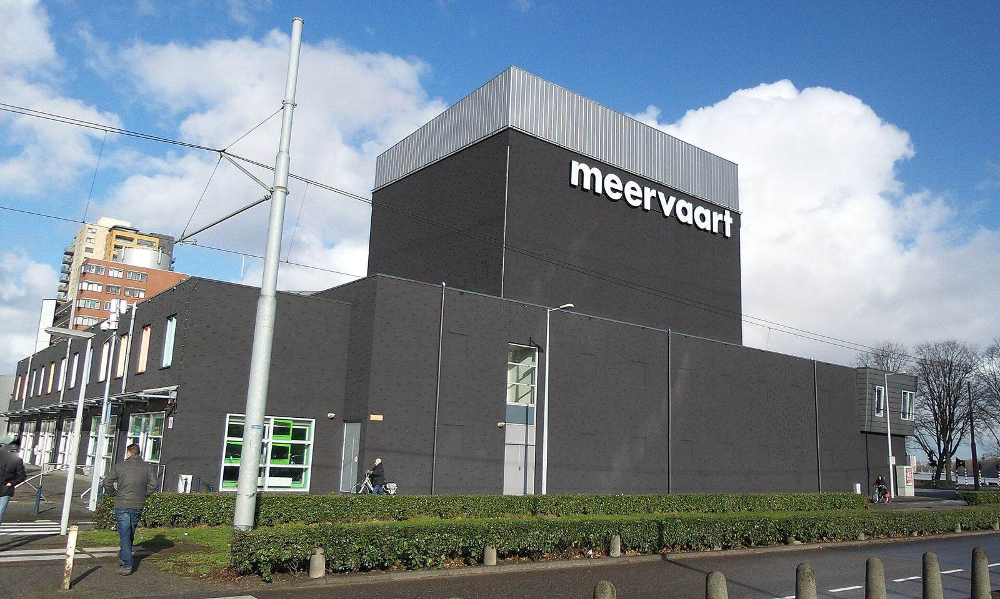

Conferences · Tech
DDD Europe 2027
- Dates
- –
- Venue
- The Meervaart, Amsterdam
- Location
- Amsterdam, Netherlands
- Format
- In-person
- Category
- Tech
- Industry
- Tech
- Organiser
- Aardling Netherlands BV
- Official website
- https://2027.dddeurope.com/
About
Official page: workshops 31 May–2 June; conference 3–4 June 2027. Dates are local to the host city (Central European Time, UTC+1 / UTC+2 in summer).
Topics: domain-driven design, software architecture, modelling.
No organiser attendance figure found on the official pages fetched 24 Nov 2026. Ranked by our estimated size tier 'medium' (10,000-30,000 attendees/visits), a judgement from format, venue and scale, not an official number.
Sources
- Official — https://2027.dddeurope.com/
Hotels
- Andaz Amsterdam Prinsengracht — 5★ · Prinsengracht 587, 1016 HT Amsterdam, Netherlands · 5.2 km from the venue · Price on request
- Bilderberg Garden Hotel — 5★ · Dijsselhofplantsoen 7, 1077 BJ Amsterdam, Netherlands · 4.6 km from the venue · Price on request
- Conservatorium Hotel Amsterdam — 5★ · Van Baerlestraat 27, 1071 AN Amsterdam, Netherlands · 4.8 km from the venue · Price on request
- Hotel Artemis Amsterdam — 4★ · John M. Keynesplein 2, 1066 EP Amsterdam, Netherlands · 2.2 km from the venue · Price on request
- Met Hotel Amsterdam — 4★ · Marius Bauerstraat 401, 1062 AP Amsterdam, Netherlands · 1.9 km from the venue · Price on request
Venue
- Theater De Meervaart — Venue · Meer en Vaart 300, 1068 LE Amsterdam · 800 capacity